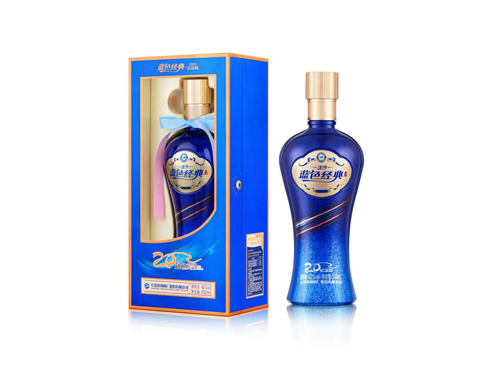

返回首页
中文
English
日本語
中文
English
日本語

蓝色经典
入口顺滑，花果香气平衡，酒体丰满，适合广泛消费群体和各种场合，是日常与宴请的优选。
工艺
传统工艺：蓝色经典白酒采用洋河传统的酿造方法，这些方法经过数代的精炼，产生丰富而复杂的风味。
现代提升：结合现代技术进步，确保质量控制和一致性，提升了传统的酿造过程。
优质原料：使用高质量的高粱、大米和小麦等粮食，以及纯净水源，打造优质产品。
口感
醇厚风味：提供顺滑而醇厚的风味，花香、果香和粮香平衡。
丝滑入口：入口丝滑柔顺，适合广泛的消费者。
复杂余味：余味悠长而和谐，层次丰富，留下深刻印象。
外观
简洁瓶身设计：瓶身设计简洁现代，通常采用蓝色调，象征纯净和品质。
精致包装：包装优雅精致，适合作为礼品和高端展示。
鲜明品牌：瓶身上有清晰的洋河品牌标志，强调产品的传承和高品质。
其他
广泛市场认知：蓝色经典是洋河最受认可和广泛享受的产品之一，以其一致的质量和风味著称。
高性价比：定位于中高端市场，以合理的价格提供卓越的品质，性价比极高。
文化意义：代表洋河酒厂丰富的文化遗产，将传统工艺与现代优雅结合。
适合场景
日常饮用
商务宴请
家庭聚会